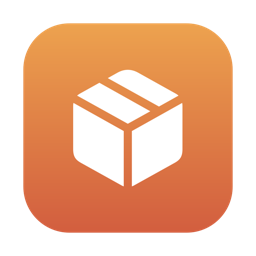

PeekboxSee inside every archive.
Then open it right.
Peekbox opens, previews and creates zip, 7z, RAR and tar files on your Mac — and fixes the things other unzip apps get wrong.
One-time purchase · No subscription, ads or account · macOS 14 Sonoma or later · Apple silicon and Intel

Everything an archive app should do
Built from what people actually complain about in reviews of Mac and iPhone archive apps.
Look before you extract
Browse folders inside any archive, preview a file with Space, and drag out only what you need.
Smart extraction
One item comes out as itself, many land in a single folder. No “Archive 2/Archive/Archive” nesting, no __MACOSX clutter.
Fixes garbled names
Zips made on Windows in Japanese, Chinese, Korean, Cyrillic and more are detected and shown with the right characters.
Rescues damaged archives
Names exactly which files are broken and extracts everything that's still intact, instead of giving up.
Passwords, remembered
Opens encrypted zip, 7z and RAR. Creates AES-256 archives. Saved passwords live in your Keychain and are tried for you.
A folder of zips? Done.
Drop many archives or a whole folder: each is extracted in turn, split sets counted once, locked ones wait for you.
Split and clean
Make 25 MB, 100 MB or custom-size parts for email and uploads. Leave out node_modules, .git and Mac junk with a live size preview.
Fast with huge archives
A 100,000-file archive opens in about two seconds, and the window never freezes. Powered by the official 7-Zip engine.
Built into Finder
You don't even have to open the app.

Icons that show what's inside
Archives in Finder show their format, the first folders and files, how many files and how big — and a lock when they're password-protected.
Press Space to peek
Quick Look shows the whole folder tree of a zip, 7z or RAR, with sizes and fixed file names, without extracting anything.
Right-click to extract or compress
Quick Actions put “Extract with Peekbox” and “Compress to ZIP” in Finder's right-click menu.
Set up in one screen
On first launch Peekbox shows exactly what's switched on and fixes the rest in one click: make it the default for archives, turn on Finder previews, add Quick Actions.
Opens: zip, 7z, RAR (v4 and v5, multi-part), tar, tar.gz, tgz, tar.bz2, tar.xz, gz, bz2, xz, cab, cpio, jar, iso and split .001 sets. Creates: zip and 7z.

One price. Yours to keep.
Pay once. Free updates for version 1.
- All features, no in-app purchases
- No subscription, ads, tracking or account
- Works offline: your files never leave your Mac
- Use it on all your own Macs
Bought through your Apple Account; updates arrive through the App Store.
Questions
How do I get updates?
Through the Mac App Store, like any other app — automatically if you have App Store updates turned on.
Which Macs does it run on?
macOS 14 Sonoma or later, on Apple silicon and Intel Macs.
Does it upload my files anywhere?
No. Peekbox makes no network connections. Everything happens on your Mac, and saved passwords stay in your own Keychain.
Can it create RAR files?
No — RAR is a closed format whose compressor isn't licensed for other apps. Peekbox opens RAR (including encrypted and multi-part), and creates zip and 7z.
The Finder previews don't appear.
Open Peekbox's Help menu → Welcome to Peekbox. It shows which parts are switched on and opens the right System Settings page for the rest.
What about the 7-Zip engine?
Peekbox includes the official 7-Zip by Igor Pavlov, under the GNU LGPL. Its licence and source link are in Peekbox's About window.